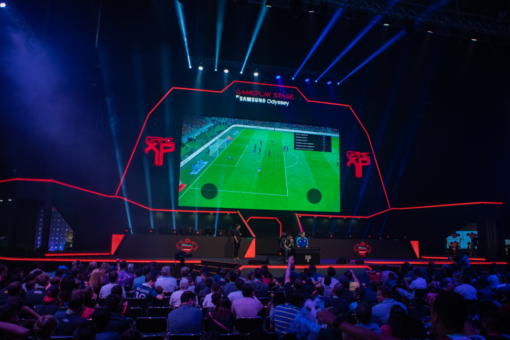

A Game Over se tornou referencia no mercado de games
São Paulo – O mundo corporativo funciona sempre da mesma forma. Quando um mercado considerado de nicho conquista muitos fãs, as empresas entram no negócio e o transformam por completo. Foi assim com a Game Over. Nos anos 90, as grandes marcas queriam distância do esporte, mas ele se popularizou tanto que companhias de diversos setores acabaram seduzidas Atualmente, a Game Over é um fenômeno global, com muitas oportunidades financeiras. No início dos anos 2000, o skate passou por um processo parecido. Agora é a vez de o mercado de jogos eletrônicos deixar de ser alvo apenas dos nerds para se tornar uma atividade bilionária.
Estudo realizado pela consultoria Newzoo concluiu que o mercado de jogos eletrônicos já movimenta US$ 1,5 bilhão por ano no Brasil – ou o dobro de uma década atrás. “É importante destacar que o desempenho foi alcançado em um cenário de crise profunda, com a economia em recessão, altos índices de desemprego e corte de investimentos das empresas”, diz Lauro Figueiredo, consultor especializado em tecnologia. “Se o país estivesse em ordem, provavelmente a performance do setor seria muito melhor”.
Outro levantamento, desta vez realizado pela PWC, projetou o potencial do setor. Segundo a pesquisa, o mercado de games no país deverá crescer 5,3% até 2022. Apenas com jogos para celulares, as receitas do segmento subirão de US$ 324 milhões para US$ 878 milhões nos próximos 3 anos.
O Brasil é 13º maior mercado de games do mundo, mas, se as projeções forem confirmadas, deverá estar entre os 10 primeiros no futuro próximo. A liderança global é dos Estados Unidos, responsável por um mercado estimado em US$ 37 bilhões. A China, segunda colocada no ranking, chegou a ameaçar a primazia americana, mas problemas relacionados à liberação de licenças de novos títulos comprometeram os resultados do país. No mundo, a indústria de jogos eletrônicos deverá movimentar US$ 152 bilhões em 2019, segundo dados da pesquisa Global Games Market, da Newzoo.
Quase metade desse valor (US$ 68,5 bilhões) deverá ser gerada por jogos para dispositivos móveis, como celulares e tablets. Indispensável na rotina dos brasileiros, o celular é a plataforma preferida dos adeptos de games eletrônicos: 83% deles escolhem jogar usando um smartphone. Com a melhoria da rede 4G e a chegada do sistema 5G, os jogos para celular devem se tornar ainda mais atrativos.
